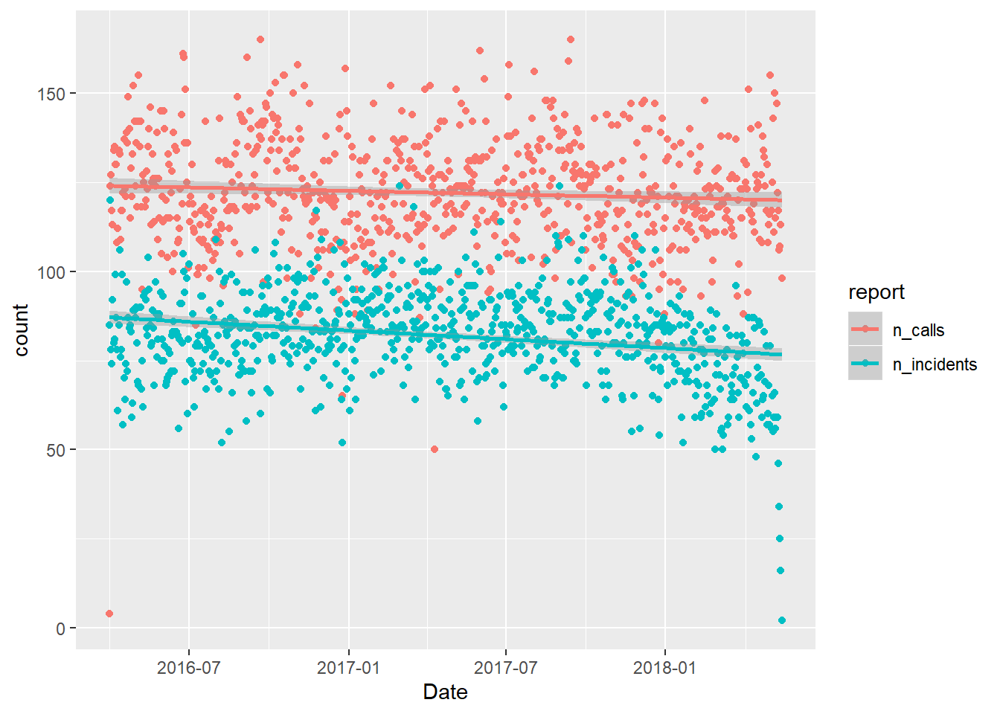
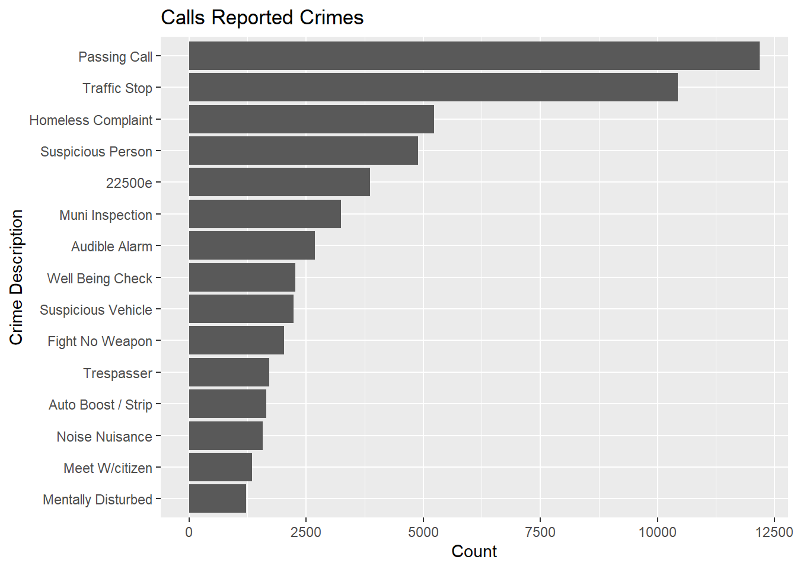
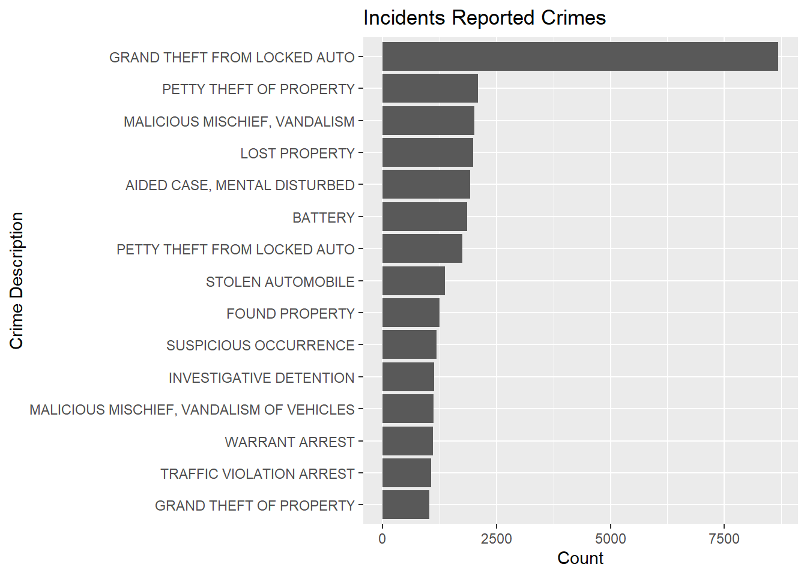
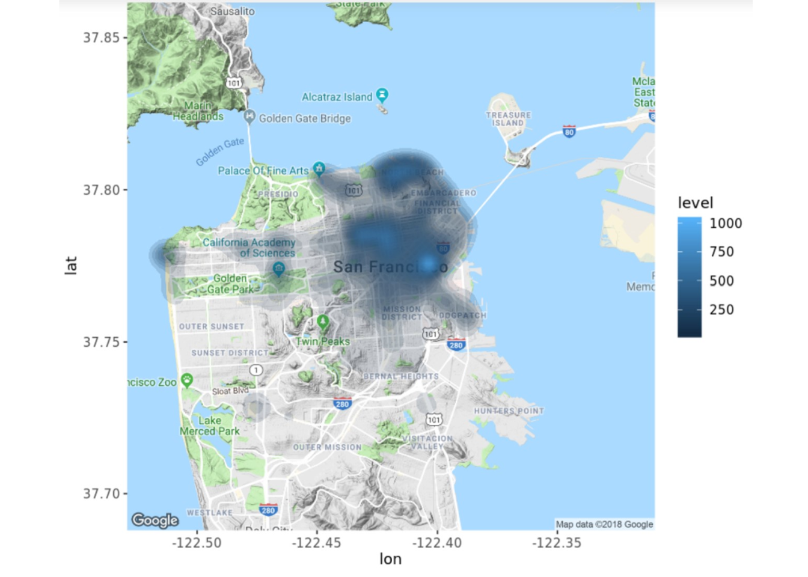

In this R-markdown project, I leverage publicly available data to interpret crime patterns within the city of San Francisco. I utilize my skills in R through data manipulation with dplyr package as well as data visualization with ggplot 2. This project was originally completed through DataCamp using a Jupyter notebook. All codes are annotated.
tidyverse and lubridate packages to read the CSV files from the city of San Francisco website.#Load libraries
library(lubridate)
library(tidyverse)
# Read in incidents dataset
incidents <- read_csv("data/downsample_police-department-incidents.csv")
# Read in calls dataset
calls <- read_csv("data/downsample_police-department-calls-for-service.csv")glimpse the incidents and calls datasets to understand the structure of the data.Date and rename the column of counts to n_incidents.n_calls, assigning the output to daily_calls.# Glimpse structure of both datasets
glimpse(incidents)
glimpse(calls)
# Aggregate the number of reported incidents by Date
daily_incidents <- incidents %>%
count(Date, sort = TRUE) %>%
rename(n_incidents = n)
# Aggregate the number of calls for police service by Date
daily_calls <- calls %>%
count(Date, sort = TRUE) %>%
rename(n_calls = n)Here, I use inner_join() to join daily_calls to daily_incidents, assigning the output to a variable named shared_dates. I then inspect the new dataframe.
#inner join
shared_dates<-inner_join(daily_calls, daily_incidents, by="Date")
glimpse(shared_dates)## Observations: 776
## Variables: 3
## $ Date <dttm> 2016-09-21, 2017-09-14, 2017-06-01, 2016-06-24, 2016-0...
## $ n_calls <int> 165, 165, 162, 161, 160, 160, 159, 158, 158, 157, 156, ...
## $ n_incidents <int> 60, 97, 100, 105, 100, 89, 109, 97, 93, 72, 73, 68, 80,...gather() function.ggplot() in order to visualize Date vs. Count, and color by report. I overlay a linear model to visualize the trends in the data.# Gather into long format using the "Date" column to define observations
plot_shared_dates <- shared_dates %>%
gather(key = report, value = count, -Date)
# Plot points and regression trend lines
ggplot(plot_shared_dates, aes(x = Date, y = count, color = report)) +
geom_point() +
geom_smooth(method = "lm", formula = y ~ x)
month, from the Date column of the previous dataset. I then group_by() this new column in order to summarize() the new frequency counts. I then use the cor() function to calculate the correlation.# Calculate correlation coefficient between daily frequencies
daily_cor <- cor(shared_dates$n_incidents, shared_dates$n_calls)
daily_cor## [1] 0.1469688# Summarize frequencies by month
correlation_df <- shared_dates %>%
mutate(month = month(Date)) %>%
group_by(month) %>%
summarize(n_incidents = sum(n_incidents),
n_calls = sum(n_calls))
# Calculate correlation coefficient between monthly frequencies
monthly_cor <- cor(correlation_df$n_incidents, correlation_df$n_calls)
monthly_cor## [1] 0.970683We see that there is a correlation coefficient of 0.97 which indicates a high correlation between daily frequencies.
filtering joins to keep the information from each police reported incident and each civilian call on their shared dates in order to calculate similar statistics and compare results.# Subset calls to police by shared_dates
calls_shared_dates <- semi_join(calls, incidents, by= c("Date"="Date"))
# Perform a check that we are using this filtering join function appropriately
identical(sort(unique(shared_dates$Date)), sort(unique(calls_shared_dates$Date)))## [1] TRUE# Filter recorded incidents by shared_dates
incidents_shared_dates <- semi_join(incidents, calls, by= c("Date", "Date"))ggplot().# Creating bar chart of the number of calls for each crime
plot_calls_freq <- calls_shared_dates %>%
count(Descript) %>%
top_n(15, n) %>%
ggplot(aes(x = reorder(Descript, n), y = n)) +
geom_bar(stat = 'identity') +
ylab("Count") +
xlab("Crime Description") +
ggtitle("Calls Reported Crimes") +
coord_flip()
# Creating bar chart of the number of reported incidents for each crime
plot_incidents_freq <- incidents_shared_dates %>%
count(Descript) %>%
top_n(15, n) %>%
ggplot(aes(x = reorder(Descript, n), y = n)) +
geom_bar(stat = 'identity') +
ylab("Count") +
xlab("Crime Description") +
ggtitle("Incidents Reported Crimes") +
coord_flip()
# Outputting the plots
plot_calls_freq
plot_incidents_freq
We can observe that the crime of highest incidence is Grand Theft From Locked Auto. The 12th most civilian reported crime is “Auto Boost/Strip.” There may be a possibility that the location of the called in crime is similar to the location of the crime incidence. We should check to see if the locations of the most frequent civilian reproted crime and police reported crime are similar.
# Arranging the top 10 locations of called in crimes in a new variable
location_calls <- calls_shared_dates %>%
filter(Descript == "Auto Boost / Strip") %>%
count(`Address`) %>%
arrange(desc(n))%>%
top_n(10, n)
# Arranging the top 10 locations of reported incidents in a new variable
location_incidents <- incidents_shared_dates %>%
filter(Descript == "GRAND THEFT FROM LOCKED AUTO") %>%
count(`Address`) %>%
arrange(desc(n))%>%
top_n(10, n)
# Printing the top locations of each dataset for comparison
location_calls
location_incidentsHere, I visualize a 2D density plot on a map of San Francisco.
I use the ggmap package and read a preprocessed map of San Francisco (sf_map)
I filter() by grand theft auto and save this into a new dataframe. I then overlay the lattitude and longitude data using stat_density_2d()
# Load ggmap
library(ggmap)
# Read in a static map of San Francisco
sf_map <- readRDS("/datasets/sf_map.RDS")
# Filter grand theft auto incidents
auto_incidents <- incidents_shared_dates %>%
filter(Descript == "GRAND THEFT FROM LOCKED AUTO")
# Overlay a density plot of auto incidents on the map
ggmap(sf_map) +
stat_density_2d(
aes(x = X, y = Y, fill = ..level..), alpha = 0.15,
size = 0.01, bins = 30, data = auto_incidents,
geom = "polygon")